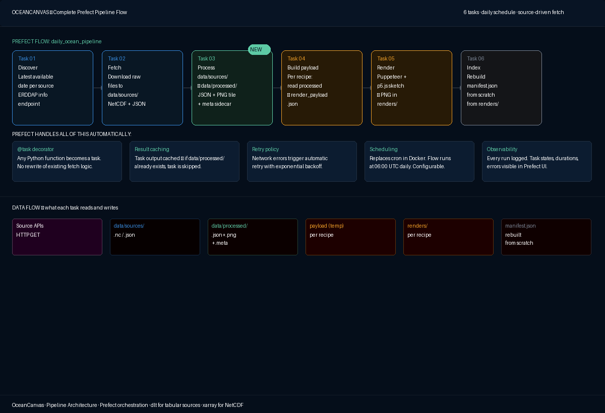
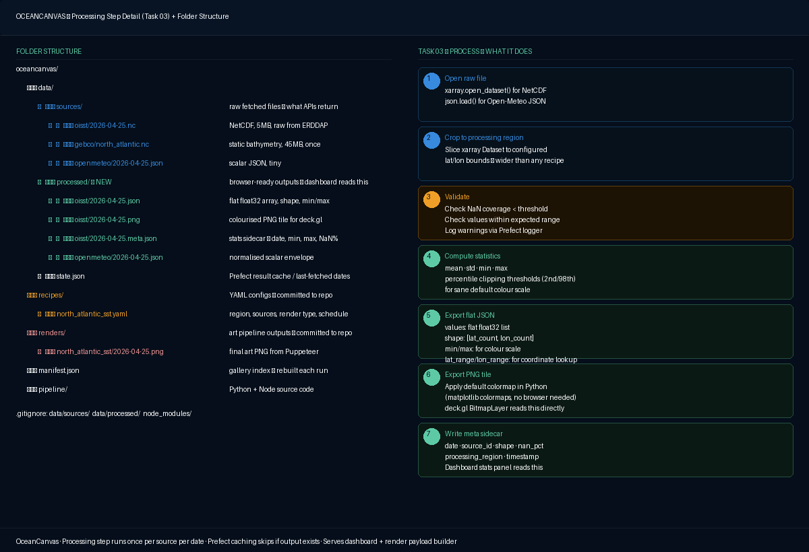
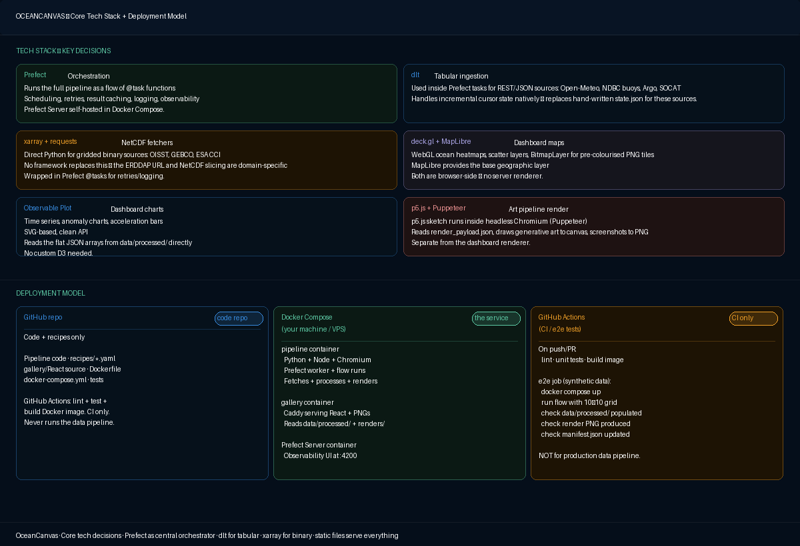

OC-04 — Technical Architecture
OceanCanvas — Pipeline Architecture & Technical Design
April 2026 · v1.0
This document is the definitive technical reference for the OceanCanvas data pipeline, processing layer, and rendering architecture. All decisions are consolidated here.
Architecture overview
The OceanCanvas pipeline is a daily Prefect flow that fetches ocean data from public APIs, processes it into browser-friendly formats, renders generative art from recipes, and indexes the results. It runs as a service on your hardware (laptop for development, VPS for production) inside Docker Compose.

Fig 1. Complete Prefect pipeline flow — 6 tasks, daily schedule, source-driven fetch + recipe-driven render.The six pipeline tasks
| Task | Description |
|---|---|
| Task 01 — Discover | For each source, query the latest available date. ERDDAP sources use /info/{datasetID}/index.json. Open-Meteo is always today. GEBCO never changes. Prevents requesting data that does not yet exist. |
| Task 02 — Fetch | Download raw files to data/sources/. OISST and GEBCO fetched as NetCDF via ERDDAP griddap URLs. Open-Meteo is a JSON API call. dlt handles incremental state for tabular/REST sources. Prefect retries on network failure. |
| Task 03 — Process | Opens raw files with xarray, crops to processing region, validates, computes statistics, exports three outputs per source per date to data/processed/. Runs once per source per date — not per recipe. |
| Task 04 — Build payload | Per recipe: reads data/processed/ for each source the recipe needs. Crops further to the recipe's specific lat/lon region. Assembles a flat render_payload.json that the p5.js sketch will consume. |
| Task 05 — Render | Per recipe: Node.js subprocess launches Puppeteer, loads the p5.js sketch HTML, injects the render payload, waits for window.__RENDER_COMPLETE, screenshots the canvas. Writes PNG to renders/{recipe}/{date}.png. |
| Task 06 — Index | Walks the renders/ directory, collects all PNGs, rebuilds manifest.json from scratch. Cleans up temp payload files. |
Task 03 — The processing step
The processing step is the bridge between raw source data and what the dashboard and renderer actually need. It runs once per source per date and produces three outputs.

Fig 2. Task 03 detail — sub-steps from opening the raw file to writing the meta sidecar.Three outputs per source per date
Written to data/processed/{source_id}/{YYYY-MM-DD}.*:
| File | Contents | Consumer |
|---|---|---|
.json |
Flat float32 array + shape [lat_count, lon_count] + min + max + lat_range + lon_range + date + source_id | Dashboard hover interaction, render payload builder |
.png |
Colourised PNG tile at processing region resolution (matplotlib colormap applied server-side) | Dashboard heatmap fast path via deck.gl BitmapLayer |
.meta.json |
Statistics sidecar: date, source_id, shape, min, max, nan_pct, processing_region, processing_timestamp | Dashboard stats panel (loaded first — small and fast) |
Processing region
The processing region is configured per source — for example, North Atlantic (20°N–75°N, 90°W–10°E) covers all recipes that target the North Atlantic basin. It is wider than any individual recipe region but not global.
Prefect caching makes the step idempotent
If data/processed/oisst/2026-04-25.json already exists, the task is a cache hit and is skipped. Running the pipeline twice in one day does not re-process.
Complete folder structure
| Path | Purpose |
|---|---|
data/sources/ |
Raw fetched files in native format — NetCDF for OISST/GEBCO/ESA CCI, JSON for Open-Meteo. gitignored, regenerable. |
data/processed/ |
Browser-ready outputs: flat JSON arrays, colourised PNG tiles, meta sidecars. gitignored, generated by Task 03. |
data/state.json |
Prefect result cache index. Updated atomically after each successful task. gitignored. |
recipes/ |
YAML configuration files — one per art piece. Committed to repo. |
renders/ |
Pipeline output PNGs — one per recipe per day. Committed to repo or pushed to Cloudflare R2. |
manifest.json |
Gallery index. Rebuilt from scratch by Task 06 on every run. |
pipeline/ |
Python + Node.js source code. Committed to repo. |
gallery/ |
React application source. Committed to repo. |
docker-compose.yml |
Container definitions. Committed to repo. |
Core tech stack

Fig 3. Core tech stack (6 tools, separated by concern) and deployment model (3 contexts: GitHub repo, Docker Compose service, GitHub Actions CI).All decisions — locked
| Decision | Choice | Rationale |
|---|---|---|
| Orchestration | Prefect (@task/@flow) | Retry, caching, scheduling, observability. Lighter than Airflow, richer than cron. Self-hosted. |
| Tabular ingestion | dlt (inside Prefect tasks) | Incremental cursor state built-in. Replaces hand-written state.json for REST/JSON sources. |
| NetCDF fetchers | xarray + requests (plain Python) | No framework fits binary gridded data. Wrapped in Prefect @tasks for retries/logging. |
| Processing step | data/sources/ → data/processed/ | Fills the gap between raw NetCDF and dashboard/renderer. Runs once per source per date. |
| Dashboard maps | deck.gl + MapLibre GL | WebGL, 60fps, handles ocean-scale grids. BitmapLayer for PNG tiles, custom layers for hover. |
| Dashboard charts | Observable Plot | Clean API, SVG output, designed for analytical data exploration. |
| Art rendering | p5.js + Puppeteer | Creative coding library + headless screenshot. Separate from dashboard renderer. |
| Deployment | Docker Compose (self-hosted) | Same stack on laptop and VPS. One-command self-hosting. |
| CI/CD | GitHub Actions (code validation only) | Lint + test + build image + e2e with synthetic data. Never runs the data pipeline. |
| Storage — raw data | Files (data/sources/) | Native format per source. Not committed to git. Regenerable. |
| Storage — processed | Files (data/processed/) | Browser-friendly JSON + PNG + meta. Not committed to git. |
| Storage — renders | Files (renders/) | Gallery PNGs. Committed to repo or Cloudflare R2. Served by Caddy. |
| Database | None (v1) | Everything is file-shaped. SQLite if manifest grows. |
| Image serving (prod) | Local disk → Cloudflare R2 | Zero egress. Start local, move to R2 when going public. |
| Video assembly | ffmpeg | Frame assembly, overlay compositing, audio muxing in one command. |
| Audio generation | Generative music API (Mubert/Beatoven) | Professional-quality licensed music. Stem-based mixing for data-driven evolution. |
How data is served to the UI
There is no data API server at runtime. Everything the browser needs is served as static files by Caddy.
| What | Path | How |
|---|---|---|
| Gallery images | renders/{recipe}/{date}.png |
Static files. React gallery reads manifest.json to know what exists. |
| Dashboard heatmap (fast path) | data/processed/{source}/{date}.png |
deck.gl BitmapLayer displays instantly as geographic overlay. |
| Dashboard interactive hover | data/processed/{source}/{date}.json |
JavaScript indexes the flat array by lat/lon. Loaded once per source per date. |
| Dashboard time series | data/processed/{source}/timeseries.json |
Observable Plot reads this for the trend chart. |
| Dashboard stats panel | data/processed/{source}/{date}.meta.json |
Tiny sidecar loaded first; full JSON array loads asynchronously. |
| Gallery index | manifest.json |
React app reads once on load. |
Deployment model
| Context | Description |
|---|---|
| GitHub | Code repository. Pipeline source, recipes, gallery React source, Dockerfile, docker-compose.yml. Not data/sources/, data/processed/, renders/. |
| Docker Compose | Four services: postgres (Prefect state DB), prefect-server (Prefect Server), pipeline (Python 3.12 + Node.js 20 + Chromium), gallery (Caddy serving React). |
| Where it runs | M4 Pro for dev (current prod). Hetzner CAX21 (4 vCPU ARM, 8GB RAM, ~€6/month) for VPS. |
The six render types
| Type | Description | Natural fit |
|---|---|---|
| Field | Maps the 2D spatial grid to a colour field. Every cell becomes a pixel, colormap applied. | OISST, SST-CCI, salinity, sea level, chlorophyll, sea ice |
| Particles | Animated particles move through the data field, velocity derived from current data or spatial gradient. | OSCAR currents, WW3 waves, OISST gradient |
| Contour | Isolines drawn through the field using marching squares. | Any gridded source. Particularly effective for SST anomaly. |
| Pulse | Scalar time series drives concentric rings, oscillations, waveforms. | Open-Meteo wave height, NSIDC ice extent, GMSL |
| Scatter | Point cloud from discrete observation data. | Argo profiles, NDBC buoys, SOCAT ship tracks |
| Composite | Ordered layer stack combining multiple render types. | Complex multi-source pieces |
Recipe editor studio — the creative interface
The recipe editor operates at the level of artistic intent, not technical parameters.
Design principle: A 1-1 knob mapping (colormap, particle_count, opacity) is the wrong abstraction for a creative user. Someone thinking 'I want this to feel like a storm' should never need to think about particle_count: 4000. The creative control surface lives at the level of intent. Technical parameters are generated output, not user input.
The flip — one preview, two modes
The editor has a single preview canvas that never moves, and a control surface below it that flips between two modes.
 Fig 4a. Creative mode — mood presets, energy×presence 2D space, colour character spectrum, temporal weight.
Fig 4a. Creative mode — mood presets, energy×presence 2D space, colour character spectrum, temporal weight.
 Fig 4b. YAML mode — same preview, recipe YAML with amber lines showing creative choices.
Fig 4b. YAML mode — same preview, recipe YAML with amber lines showing creative choices.
Creative mode controls
| Control | Maps to |
|---|---|
| Mood presets | Full parameter space simultaneously |
| Energy (X axis) | Field variation, particle speed, contour density |
| Presence (Y axis) | Opacity, particle count, line weight |
| Colour character | Colormap selection |
| Temporal weight | Tail length, ring decay, layer accumulation |
YAML mode
Amber highlighted lines = the creative choices. Blue lines = structure and source definitions. The YAML is editable — changes snap the creative controls to the closest matching position. Bidirectional sync.
Video editor — timelapse assembly
 Fig 5. Video editor with audio and overlay enrichment tracks. Sequence · Audio · Overlays in the right panel.
Fig 5. Video editor with audio and overlay enrichment tracks. Sequence · Audio · Overlays in the right panel.
The video editor is assembly only — it reads existing PNGs from renders/{recipe}/. Export time for 365 frames is seconds, not minutes (ffmpeg I/O only, no re-rendering).
Three enrichment tracks
All three share the same key moment detection algorithm — statistical peaks, record highs, threshold crossings, inflection points. Audio and overlays respond to the same detected frames.
Track 1 — Visual: date range sliders, frame rate (6/12/24fps), recipe selector
Track 2 — Audio: theme (Ambient/Ocean/Dramatic/etc.), energy arc, sensitivity, key moment intensity. API generates stems at multiple intensities; Python crossfades between them as data scalar changes.
Track 3 — Overlays: primary counter, anomaly indicator, event labels, record flash, sparkline, timeline ribbon, date stamp, source attribution (essential, on by default). Pull quote, cumulative stat, projection ghost, comparative split (optional).
GitHub Actions — e2e test
The e2e test validates the entire pipeline with a synthetic 10×10 grid dataset. Does not hit real NOAA or ESA APIs. Validates:
- Task order is correct
- Processing step produces all three outputs
- Render payload is assembled correctly
- Puppeteer render produces a valid PNG
- manifest.json is rebuilt correctly
- Prefect flow completes without errors
Open questions — requiring RFC in Phase 2
Note: RFC numbering was revised after Phase 2 definition. Three original RFCs (Processed JSON, Docker Compose stack, GitHub Actions CI) closed directly into ADRs (ADR-015, ADR-011, ADR-013/014). Three new RFCs were added from PRD open threads. See docs/rfc/index.md for the current list.
| Question | Current RFC / ADR |
|---|---|
| Recipe YAML schema — all fields, types, defaults, required vs optional | RFC-001 |
Render payload format — window.OCEAN_PAYLOAD complete specification |
RFC-002 |
| Recipe lifecycle on source unavailability | RFC-003 |
| Live preview architecture | RFC-004 |
| YAML round-tripping | RFC-005 |
| Audio system technical design — API selection, stem mixing approach | RFC-006 |
| Key moment detection algorithm — formal specification | RFC-007 |
| Processed JSON format — formal specification | ADR-015 (closed) |
| Docker Compose stack specification | ADR-011 (closed) |
| GitHub Actions CI design | ADR-013 + ADR-014 (closed) |
Implementation sequence
Phase 1 — Pipeline skeleton (v1, 3 sources)
- Set up Prefect Server in Docker Compose + prefect worker container
- Implement the Prefect flow with 6 tasks, wired but empty
- Implement Task 01–06 for OISST, Open-Meteo, and GEBCO
- Write e2e test with 10×10 synthetic OISST data
Phase 2 — Dashboard + recipe editor
- Set up React + deck.gl + MapLibre skeleton
- Load
data/processed/oisst/{date}.pngas a BitmapLayer - Implement source switching, region selector, editorial spreads
- Build recipe editor studio: flip, creative controls, YAML mode, sketch editor
Phase 3 — Expand sources
- Add remaining ERDDAP sources, ESA CCI sources, dlt tabular sources
- Add processing tasks and editorial spreads for each new source
OceanCanvas · OC-04 Technical Architecture · v1.0 · April 2026